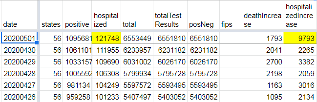

api/v1/us/daily.csv "hospitalized" / "hospitalizedIncrease" numbers seem way high
Issue number 345
ffrehner opened this issue on May 1, 2020 at 6:20 pm
The most-recent data update appears to have inflated numbers for these two columns:

Comments
muamichali commented on May 3, 2020 at 10:45 am
Hi @ffrehner
it looks like the reason for this sudden jump is that the state of CT reported its cumulative hospitalizations for the first time. The number was 7758 so it caused the overall number to look very high. Presumably most of the hospitalizations did not happen that date.
If we can get from CT historical cumulative hospitalizations numbers, we will be able to adjust our previous numbers and smooth out this jump. We can only track numbers reported by the states.
Thanks so much for reporting this inconsistency. We are going to look into the root cause of this